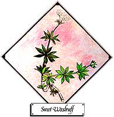
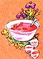

Lately, more and more people have begun to understand just how limited-in both variety and nutrional value-our "modern" diets have become. This realization has Sparked a new and wide-spread interest in the culinary and therapeutic uses of herbs . . . those plants which-although not well-known today-were, just one short generation ago, honored "guests" on the dinner tables and in the medicine chests of our grandparents' homes. In this regular feature MOTHER will examine the availability, cultivation, and benefits of our "forgotten" vegetable foods and remedies . . . and-we hope-help prevent the loss of still another bit of ancestral lore.
If you enjoy fragrance, you'll probably like sweet woodruff ( Asperula odorata or Galium odoratum ), because its scent has been likened to that of new-mown hay or vanilla. A perennial that thrives in moist woods in temperate climes, sweet woodruff has, for centuries , been gathered and dried for use asa - mong other things - a strewing herb (the old-fashioned equivalent of today's air fresheners), a perfume and potpourri ingredient, a tonic tea, and a special addition to the May Day wine ("Maibowl") with which Europeans celebrate the return of spring. Furthermore, on St. Barnabas's and St. Peter's days, bouquets of woodruff, sweet box, lavender, and roses were placed in churches.
Sweet woodruff's pleasing scent only becomes apparent after the leaves have been dried . . . but then it lasts for years. The odor is due to coumarin, a chemical also found in tonka beans, sweet clover or meliot, and some other leguminous plants. In potpourris, since it not only adds a fragrance of its own but acts as a fixative for other s cents, woodruff's contri bution is twofold. Sachets of the dried herb can be laid among the household linens; in an earlier age, the leaves were even used to stuff mattresses. (In addition to perfuming the bedclothes, the sachets were reputed to repel insects, which must have made the herb a popular commodity in the days when regular bathing was a luxury!)
Teutonic warriors believed that woodruff promoted success in battle, and therefore tucked its green sprigs in their helmets. The origin of this belief isn't clear: Perhaps it stems from the fact that woodruff leaves are mildly anesthetic and healing when applied externally (thus helping a soldier to ignore his wounds) . . . or perhaps it derived from the leaves' ability to "make the heart merry" when taken in wine.
Be that as it may, this charming little herb can substitute for vanilla in various sauces and beverages. Marilyn Hampstead, whose Fox Hill Farm is one source of Asperula plants, reports that sweet woodruff can be steeped in milk - overnight or for several days - to make a refreshing drink that's especially enjoyed by children . . . or, to impart a vanilla taste, soaked in whatever liquid is required in a given recipe . . . or, to make a delicious glaze for tarts and turnovers, steeped in currant juice and strained out before the juice is thickened by cooking with sugar.
Woodruff grows to an average height of about eight inches from a slender, creeping root-stock. Whorls of six to eight slightly shiny, somewhat rough, pointed leaves surround the square, glossy stem. Small, starry flowers appear in May and June; later, the seeds ripen into little rough balls covered with hooked bristles that cling to passersby. The plants can be propagated by seed, but since the germination period is so long (sometimes 200 days!), more satisfactory results can be obtained by root division in the spring and early summer (right after flowering). The herb prefers moist, slightly acid, humusrich soil in a semi-shaded location. Woodruff is quite finicky, so its conditions must be met for it to survive . . . but once established, it spreads to make a good ground cover. The leaves will be most fragrant if harvested during and directly after blooming. Chop them up and dry them immediately in a warm, shaded area.
Many fine nurseries carry sweet woodruff plants, among them [1] Hemlock Hill Herb Farm, Dept. TMEN, Hemlock Hill Rd., Litchfield, CT 06759 (catalog 500 cents , [2] The Rosemary House, Dept. TMEN, 120 S. Market St., Mechanicsburg, PA 17055 (catalog $1.00), and [3] Fox Hill Farm, Dept. TMEN, 444 W. Michigan Ave., Box 7, Parma, MI 49269 (catalog $1.00, price list free).
|
 With sugar and juice, woodruff makes a tasty glaze. |
Wine, fruit, sugar, and woodruff make a delicious ""Maibowl"". |
 |